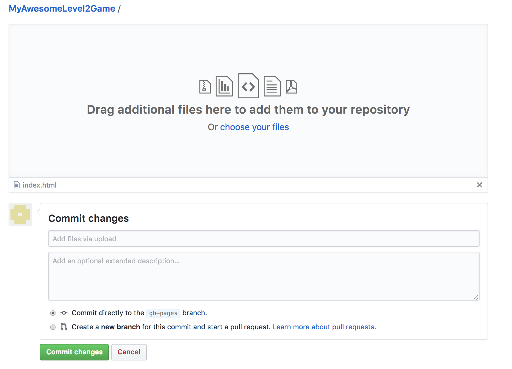

Instructions for Uploading Your Game Webpage
- Make sure you have the "index.html" file that was generated from the webpage builder. This file must be called index.html and cannot be changed.
- Go to your game's repository on Github.com
- On the left side of the page, click the button that reads "Branch: master"
- Type gh-pages into the box (all lowercase and no spaces) and press enter

- Drag the index.html file into your repository

- Click "Commit Changes" and that's it. The address for your page is https://YourGithubUserName.github.io/NameOfGameRepository
In this example, it would be https://IAmALeagueStudent.github.io/MyAwesomeLevel2Game
